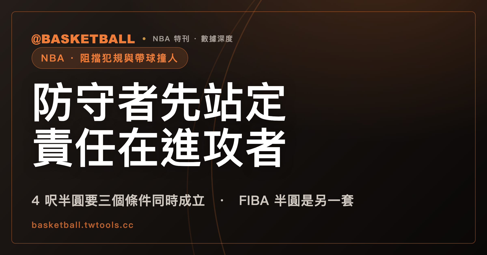

帶球撞人還是阻擋犯規？先看防守者有沒有先在路徑上站定
帶球撞人（charging）與阻擋犯規（blocking）的分派，依 NBA 2025-26 官方規則書，先看防守者有沒有先在進攻者的路徑上建立合法防守位置。禁區半圓（restricted area）是附帶條件的例外，FIBA 2024 的 no-charge 半圓則是另一套規定。

新手村｜規則入門・阻擋犯規與帶球撞人
看比賽時，禁區裡一個人倒下、一聲哨響，球迷可能會想問：到底是防守者擋人，還是進攻者撞人。這兩個詞在中文世界裡很好用，但它們是慣稱：規則書怎麼寫，和口語怎麼說，用詞並不相同。
這篇文章只用官方規則書的文字。NBA 部分依 2025-26 官方規則書，FIBA 部分依 2024 版官方規則。讀完之後，你可以做到三件事：面對一個標明「假設」的情境，自己問出該先問的問題；分清楚中文裡「阻擋犯規」「帶球撞人」和規則書用語的差別；分辨三個都跟「禁區」有關、卻是三個不同東西的名詞。
防守者先在路徑上建立合法防守位置，進攻者撞上去就判進攻犯規
依 NBA 2025-26 官方規則書的「Comments on the Rules」第 II(C) 節（標題是 BLOCK-CHARGE），防守者被允許在運球者的路徑上建立合法防守位置，不論運球者的速度與距離。同一節接著寫：進攻者如果對已經建立合法位置的防守者造成接觸，就判進攻犯規，而且不得計分。
同一本規則書的 Rule 12B 第 II 節，是另一處獨立的條文，講運球者的限制：運球者不得衝撞（charge into）已經建立合法防守位置的對手；運球者也必須隨時控制身體，發生非法接觸時，責任在運球者。
把這兩處放在一起看，判斷的入口很清楚：防守者有沒有先在進攻者的路徑上建立合法防守位置。有的話，撞上去的責任在進攻者，判進攻犯規。這個問句是本文對條文結構的整理，規則書條文本身寫的是上面那些句子。
先說明幾個詞。
- 「帶球撞人」是中文慣稱，不是規則書用語。NBA 規則書的 Rule 12B 第 I 節在個人犯規的條列裡寫的是 charge into；FIBA 2024 的第 33.8 條則直接用 Charging 當條目名稱。
- 「阻擋犯規」也是中文慣稱。NBA 規則書用的是 block/charge foul，Comments on the Rules 的標題是 BLOCK-CHARGE；官方手勢圖上則列有 BLOCKING 與 CHARGING 兩個手勢標籤。FIBA 2024 的第 33.9 條用 Blocking。
- 「站定」「先站好位置」同樣是中文說法，對應的英文是 established a legal guarding position。
NBA 2025-26 規則書的文字裡，沒有找到像 FIBA 2024 第 33.3 條那樣列出條件的「合法防守位置」定義句。所以這篇談 NBA 的部分，只能引用規則書怎麼用這個詞，沒辦法替它補一份 NBA 版的條件清單。
這條線可以用一個簡單的表對照：
| 問題 | NBA 2025-26 規則書寫了什麼 |
|---|---|
| 防守者先在運球者路徑上建立合法位置 | 被允許，不論運球者速度與距離 |
| 運球者對這樣的防守者造成接觸 | 判進攻犯規、不得計分 |
| 運球者本身的義務 | 隨時控制身體；發生非法接觸時責任在運球者 |
運球者的頭與肩已經領先防守者時，責任落在防守者身上
上一節的原則有例外，而且例外寫在同一本規則書裡。NBA 2025-26 規則書 Rule 12B 第 II(d) 款寫道：運球者如果有足夠的空間，讓頭與肩已經領先防守者，非法接觸的責任就在防守者。
這和前一節的句子並不矛盾。前一節講的是防守者已經建立合法位置的情形；這一款講的是運球者已經在前面的情形。兩條各自成立，判的時候要看接觸發生的當下，哪一邊的條件成立。
要注意的是，條文的用詞是「有足夠空間讓頭與肩領先」，本文不再替它加上更細的量尺，比如幾公分或幾步。規則書沒有在這一款裡給數字。
進攻者開始上舉動作之後，防守者才移進路徑，條文怎麼說？
NBA 2025-26 規則書 Comments on the Rules 第 II(C) 節有兩句和時間點有關：
- 防守者在進攻者開始上舉、準備出手或傳球之後，不得再移入他的路徑。
- 進攻者在 Lower Defensive Box 之外時，防守者必須讓空中的球員有落地的機會，並且在落地後避開接觸。
第一句的重點是時序：上舉動作開始了，防守者才移進來，條文不允許。第二句處理的是進攻者在空中的情形，同時帶出一個新的名詞：Lower Defensive Box。它的定義在同一節：是 3 呎 posted-up 標記、圓圈底端與底線之間的區域（原文為 the area between the 3-foot posted-up marks, the bottom tip of the circle and the endline）。這個區域在後面談 4 呎弧的段落會再出現。
沒有持球的球員，防守者要留多少距離？
以上說的都是持球或運球的人。NBA 2025-26 規則書 Comments on the Rules 第 II(C) 節對「沒有球的移動中對手」另有寫法：如果防守者移入他的路徑，必須讓對方有避開接觸的機會；要留多少距離，由球員的速度決定。
對沒球的人，條文多加了一項要求：防守者要讓對方有避開接觸的機會。條文沒有給固定的公尺或步數，寫的是由速度決定。
FIBA 2024 的寫法有相似的一面。第 33.5 條寫到：守沒有控制球的球員時，適用「時間與距離」要素。第 33.4 條則寫：守持球或運球的球員時，時間與距離要素不適用。FIBA 2024 的這兩條也把持球者與無球者分開處理；它們是 FIBA 2024 的條文，不能直接搬到 NBA 的句子上。
二線防守者站進 4 呎弧內，條文在什麼條件下不判帶球撞人？
這是「禁區半圓」的作用所在。先把名稱分清楚：「禁區半圓」是中文說法；NBA 2025-26 規則書的原文是 Restricted Area。Rule 1 第 I(i) 款規定它在場地上以半圓標示：從籃圈中心量起 4 呎，再平行於罰球線側邊延伸到籃板面，用 2 吋寬的實線畫出。Comments on the Rules 第 II(C) 節則給出這個判罰用途下的定義：以籃圈中心為起點、半徑 4 呎的弧所圍出的區域。
條文的核心句是：如果接觸的對象是一名 secondary defensive player，已經在籃框附近的 restricted area 內建立防守位置，而且是為了造犯規（for the purpose of drawing an offensive foul），就不應判帶球撞人。
這句話附有三個條件，缺一個就不是這句的適用範圍：
- 接觸的對象是二線防守者（secondary defensive player）。「二線防守者」是本文對這個英文詞的直譯，不是規則書的中文用語；NBA 2025-26 規則書在別處沒有替這個詞下定義。
- 防守者站在 restricted area 內，而且是為了造犯規。條文沒有在這一句之外說明「為了造犯規」怎麼判定，本文也不猜。
- 進攻者必須直奔籃框（the offensive player must take a path directly to the rim）。
還有一個明寫的例外：進攻者在 Lower Defensive Box 內接球時，任何球員都可以合法站在 restricted area 內。本文的讀法是：這種情形下，前面那一句「不應判帶球撞人」不適用，回到一般的合法位置判斷。
因此，「站在半圓裡就不會被判帶球撞人」是把這條條文讀寬了。條文寫的是三個條件同時成立時的一種情形；它也沒有在同一句裡寫出「不判帶球撞人之後改判什麼」，本文不替它補上答案。
判了進攻犯規之後，得分怎麼算？兩位裁判意見不同時呢？
NBA 2025-26 規則書寫到的後果有這幾項：
- 運球者衝撞已建立合法防守位置的對手，處罰是進攻犯規，而且沒有球隊犯規（There is no team foul）。這出自 Rule 12B 第 II 節。
- 進攻者對已建立合法位置的防守者造成接觸，判進攻犯規、不得計分。這出自 Comments on the Rules 第 II(C) 節。
- 涉及 restricted area 或 Lower Defensive Box 的 block/charge，如果兩位裁判判得不同，他們會會商、分享看到的資訊，設法做出正確判決；沒有結論的話，視為雙方犯規（double foul）。這出自 Rule 2 第 IV(e) 款，該款另有一個例外：第四節與每個延長賽的末兩分鐘，要看 Rule 13 第 I(a)(11) 款。
末兩分鐘和回放有關。依 Rule 13，第四節與任何延長賽的末兩分鐘，如果裁判確認 block/charge 有非法接觸，但沒有合理把握防守者是在 restricted area 內還是外，可以啟動回放。Rule 13 第 II(k) 款列出的審查項目有兩項：
- 防守者在 restricted area 內或外。
- 防守者是否處於合法防守位置。
本文引用的這一款寫的是「不確定防守者在弧內還是弧外」的情形，時段限於這兩個。不能據此推論 block/charge 的哨聲都可以看回放。
三個都跟「禁區」有關的東西：FIBA 限制區、FIBA no-charge 半圓、NBA restricted area
FIBA 2024 和 NBA 2025-26 各自有跟籃下有關的線與區域，名稱容易混。下面把三個並排：
| 名稱 | 來自 | 形狀與尺寸 | 用途 |
|---|---|---|---|
| 限制區（restricted areas） | FIBA 2024 第 2.5.3 條 | 場上標示的矩形區，由底線等線界定 | 場地區域（站內區域防守與人盯人防守一文所說的限制區是這個意思） |
| no-charge 半圓 | FIBA 2024 第 2.5.7 條、第 33.10 條 | 半徑 1.30 公尺的半圓，從籃下場上一點量到半圓外緣 | 指定籃下 charge／block 判讀的特定區域 |
| Restricted Area | NBA 2025-26 Rule 1 第 I(i) 款與 Comments 第 II(C) 節 | 從籃圈中心量起半徑 4 呎的弧，另接平行罰球線側邊的線到籃板面 | 二線防守者條款的區域 |
單位換算：4 呎等於 1.2192 公尺（4 × 0.3048），數字上比 FIBA no-charge 半圓的 1.30 公尺小。這只是算術，不代表兩個區域可以互相替代：兩者的適用條件本來就寫得不一樣。
FIBA 2024 第 33.10 條的內容是：在切入 no-charge 半圓的進攻中，空中的進攻者造成的、與站在半圓內防守者之間的接觸，不應判為球隊控球犯規（team control foul），除非進攻者非法使用手、臂、腿或身體。除了「切入半圓」與「由空中進攻者造成接觸」這兩個前提，這條還要求同時滿足三個並列條件：
- 進攻者在空中控球。
- 進攻者出手投籃或傳球。
- 防守者一腳或雙腳踩在 no-charge 半圓區內。
和前一節 NBA 的句子放在一起，差別很明顯：NBA 的條件是二線防守者、為了造犯規、進攻者直奔籃框；FIBA 的條件是切入半圓的進攻中，由空中的進攻者造成接觸，而且進攻者在空中控球、出手或傳球、防守者踩在半圓區內。哪一邊的條件都要逐項對照，不能拿一邊的條件去解釋另一邊的哨聲。
FIBA 2024 怎麼界定 charging、blocking 與持球者的接觸
FIBA 2024 對這兩個詞有直接的定義。Charging 是非法的身體接觸，不論有沒有持球，方式是推或者移入對手的軀幹（第 33.8 條）。Blocking 是非法的身體接觸，會妨礙對手的前進，不論有沒有持球（第 33.9 條）。
初始的合法防守位置，第 33.3 條寫了兩個條件：面對對手，以及雙腳在場上。
守持球者時，第 33.4 條還寫了兩點：時間與距離要素不適用；判持球者的 charge／block，接觸必須發生在軀幹，這時視為防守者先到了接觸點。
這一節都是 FIBA 2024 的規定，和前面 NBA 2025-26 的條文各自獨立。本文不比較兩邊誰判得鬆、誰判得嚴，因為沒有官方資料可依。
拿幾個假設情境，自己走一遍
以下情境全是假設，用來練習怎麼問問題，不是真實比賽的判罰。適用的是 NBA 2025-26 官方規則書。
假設一。 運球者從側翼往籃下切入，防守者已經在他的路徑上建立合法防守位置（假設這一點成立），運球者的頭與肩並沒有領先防守者，兩人發生接觸。依 Rule 12B 第 II 節與 Comments 第 II(C) 節的文字，運球者不得衝撞已建立合法位置的對手，責任在運球者，判進攻犯規、不得計分、沒有球隊犯規。
假設二。 情境和假設一相同，但這次運球者有足夠的空間，頭與肩已經領先防守者。依 Rule 12B 第 II(d) 款，非法接觸的責任在防守者。差別只在「誰先在前面」。
假設三。 一名沒有球的進攻者高速橫切，防守者在他面前才移進路徑。依 Comments 第 II(C) 節，防守者必須讓他有避開接觸的機會，距離由速度決定。條文沒有給固定數字，所以這題只能到這裡，判多遠才夠要看當下的速度。
假設四。 二線防守者站在 4 呎弧內，進攻者直奔籃框，而且防守者站位是為了造犯規（假設這一點成立），進攻者也不是在 Lower Defensive Box 內接球。Comments 第 II(C) 節的文字是：不應判帶球撞人。條文沒有在這句寫接下來改判什麼，本文也不替它補結論。
假設五。 條件和假設四相同，但進攻者是在 Lower Defensive Box 內接球。條文的例外寫的是：任何球員都可以合法站在 restricted area 內。依本文的讀法，假設四那句「不應判帶球撞人」在這裡不適用。
這五題都可以用同一個順序來問：接觸發生時，防守者有沒有先在路徑上建立合法位置？運球者的頭與肩是否已經領先？是不是無球球員？進攻者是否在空中、是否已經起跳？有沒有二線防守者、restricted area、Lower Defensive Box 這幾個詞要處理？另外，比賽適用的是 NBA 2025-26 還是 FIBA 2024？比賽用哪一套規則，哪一套的條文才是依據。
想把「犯規」和「違例」的差別先弄清楚，可以看本站的違例與犯規有什麼不同；想看擋拆的整體介紹，可以看擋拆戰術入門；想看教練挑戰怎麼運作，可以看教練挑戰入門。
常見問題
「帶球撞人」和「阻擋犯規」是規則書的正式名稱嗎？
兩個都是中文慣稱。依 NBA 2025-26 官方規則書，Rule 12B 第 I 節的個人犯規條列用的是 charge into，Rule 2 與 Rule 13 用 block/charge foul，Comments on the Rules 的標題是 BLOCK-CHARGE，官方手勢圖列有 BLOCKING 與 CHARGING 兩個標籤。依 FIBA 2024 官方規則，第 33.8 條的條目名稱是 Charging，第 33.9 條是 Blocking。
防守者站在禁區半圓內，撞上去就不會判帶球撞人嗎？
不能這樣讀。依 NBA 2025-26 官方規則書 Comments on the Rules 第 II(C) 節，「不應判帶球撞人」的句子附有條件：接觸對象是二線防守者、防守者是為了造犯規而站在 4 呎半徑的 restricted area 內、進攻者直奔籃框；進攻者在 Lower Defensive Box 內接球時，條文另有例外。條件沒有全部成立時，這一句就不是適用範圍。
NBA 的禁區半圓和 FIBA 的 no-charge 半圓是同一個東西嗎？
條文寫的是兩個不同的東西。依 NBA 2025-26 官方規則書，restricted area 是從籃圈中心量起半徑 4 呎的弧，條件是二線防守者、為了造犯規、進攻者直奔籃框。依 FIBA 2024 官方規則，no-charge 半圓半徑 1.30 公尺，條件是切入半圓的進攻中由空中的進攻者造成接觸，而且進攻者在空中控球、出手或傳球、防守者一腳或雙腳踩在半圓區內；FIBA 的限制區則是矩形區。三者不能互相代用。
防守者先站定，責任就在進攻者嗎？
不能一概而論。依 NBA 2025-26 官方規則書，防守者在運球者路徑上建立合法位置時，運球者衝撞這樣的防守者，責任在運球者；但運球者的頭與肩已領先防守者時，責任在防守者（Rule 12B 第 II(d) 款）；防守者在進攻者開始上舉之後才移入路徑，條文也不允許；對無球球員，防守者要讓對方有避開接觸的機會。FIBA 2024 另有自己的條文，不能直接套用。
資料來源
- NBA Official Playing Rules 2025-26 賽季規則書，桌內本機快照（2026 年 9 月 29 日取得），引用位置：Rule 1 Section I(i)、Rule 2 Section IV(e)、Rule 12B Section I(a) 與 Section II(a)(c)(d)、Rule 13 Section I(a)(11) 與 Section II(k)、Comments on the Rules Section II(C) Block-Charge 與其後的官方手勢圖。來源為本機 PDF 全文擷取，無可點擊的網址。
- FIBA Official Basketball Rules 2024（2024 年 10 月版，2026 年 9 月 29 日取得），本機快照，引用位置：Article 2.5.3、2.5.7、33.3、33.4、33.5、33.8、33.9、33.10。來源為本機 PDF 節錄，無可點擊的網址。FIBA 2026 版規則自 2026 年 10 月 1 日起生效，本文未引用。
- 4 呎與 1.30 公尺的換算（4 × 0.3048 ＝ 1.2192 公尺）為編輯自行計算，不是來源原文。